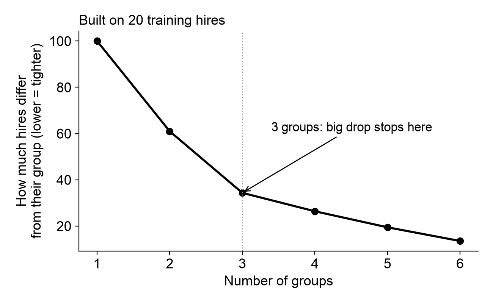

[Team name]
[Members]
github.com/karenqhhan/group7_project · model script: model/model.py

Producer 6 posts a job. Past hires (DP, UPM, art director) were found through classmates, people they knew and referrals → Scramble → curated shortlist first. Those roles were in fact hard to fill: 1 to 3 out of 10.
Each producer rated how easy it was to find a qualified person for each role (1–10), for hires made before our app. On a marketplace it still differs: some roles are scarce (drivers, art assistants) and some producers have a network to fall back on. Once the app has users, v2 replaces the survey rating with the app’s own data: applicants per post, days to fill, and how often posters re-book past crew.
| Poster’s pattern | Their discover page | Why |
|---|---|---|
| 1 · Trusted network | Re-book page: past collaborators first | They already have people; a shortlist saves only 1.4 hours a post |
| 2 · Open search | Discovery feed of new candidates matched to the role | They need strangers; a shortlist saves 2.5 hours a post |
| 3 · Scramble | Curated shortlist first, then the discovery feed | Hardest to fill; a shortlist saves 2.9 hours a post |
Shortlists go to a pattern only while they pay for themselves: Trusted network up to $27 a post, Open search up to $49, Scramble up to $59. At $25 that is everyone; if shortlists cost $40, Trusted network drops out and matching wins.
| Shortlist cost | Plan | Shortlists | Hours saved | Net value |
|---|---|---|---|---|
| $25 (base case) | Baseline: shortlist for every poster | 29 | 63 | +$535 |
| $25 (base case) | v1: by poster’s pattern | 29 | 63 | +$535 |
| $40 (what-if) | Baseline: shortlist for every poster | 29 | 63 | +$100 |
| $40 (what-if) | v1: by poster’s pattern | 18 | 43 | +$140 |
How the numbers work (fictional assumptions): a role takes 1 hour of searching per point of difficulty (10 − ease); a curated shortlist halves that; a producer hour is worth $20; a shortlist costs the app $25. Net value = hours saved × $20 − shortlist cost. Each hire’s page is set only from that producer’s other hires, so the model never sees the hire it is judged on.